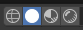
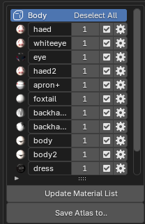

Introduction
This guide will hopefully help people learn the basics of converting MMD models (.pmx) into VRM models for use with Desktop Mate.
What You Need
-
Blender (You only need one of the options below)
Note: If using the Steam version, once installed go to properties and select the Blender 4.2 – Stable – LTS Beta.
Otherwise, download and install the 4.2.5 MSI file. -
Unofficial Cats Blender Plugin
Github DownloadFollow the instructions on the page to download and install the plugin in Blender.
-
MMDTools
Blender.org DownloadDownload and install as a plugin for Blender.
-
Material Combiner Addon
Github DownloadDownload and install as a plugin for Blender.
-
Unity
Unity Hub DownloadOpen Unity Hub, go to installs, click install editor, and install the Unity 2022.3.55f1 editor.
-
UniVRM
Github DownloadDownload the latest 0.x Import/Export unitypackage. Once you've created a Unity project, drag and drop the unitypackage into the project to install the plugin.
Reminder: Make sure to save your progress so you don't lose it. :D
Conversion Process
1. Open Blender
Make sure to delete the default cube! It's the most important step. :P

Now that Blender is open, locate the Cats Blender Plugin tools by clicking the small arrow in the side of the hierarchy area (beneath Options).
2. Import MMD Model
Click the area circled in red, or simple hit N on your keyboard.
With CATS selected on the toolbar, click "Import Model" and choose your .pmx file.


Now the model is imported into Blender!
3. Verify Textures
Check if the textures imported correctly by clicking on the right two "balls" (render mode buttons) in the top right area of Blender. Give some time for shaders to compile.

If everything looks good, press the "Fix MMD Model" button found under the MMD Options section of the Cats Blender Plugin.
4. Generate Texture Atlas
Generate a material list by going to the Optimizations section of the Cats Blender Plugin and clicking "Generate Material List."

Select the files you want to use for the atlas. (Note: Some models may require you to deselect certain materials if they do not work well with an atlas.) Once ready, click "Save Atlas To..." and save it in a designated folder.
5. Export Model
Once the texture atlas is generated and the model looks good, go to "Quick Access" in the Cats Blender Plugin and click "Export." Ignore any warnings and export the .fbx file. It’s best to save this in the same folder as your texture atlas.


6. Unity Setup
Open Unity Hub and create a new project using the appropriate template.

Once the project is created and opened, drag the UniVRM unitypackage into the project. If installed correctly, you’ll see two new tabs on the top bar.
7. Organize Project Assets
Create folders within your Assets directory to organize your files (for example, Assets > [File Type] > [Model Name] > Materials and Textures). This keeps your project tidy, especially if you convert many models.
8. Import Assets into Unity
Drag the exported .fbx file and the texture atlas (or original textures if atlas generation failed) into the corresponding folder. Then, right-click in the character folder, select Create > Material, and configure the material.
Rename the material (e.g., after the texture atlas), change the shader type to VRM/MToon, and set the rendering mode to Cutout.

Drag the texture atlas onto the appropriate texture slots in the material, then apply it to the .fbx file.
Finally, drag the .fbx file into the hierarchy to see your model in the scene.


9. Configure Rigging
Select the .fbx file in Unity, go to the Rig tab, choose Humanoid as the animation type, and click Apply.
Click "Configure" (unlock the window by clicking the lock icon if needed). Then, under the Head settings, select "None" for the Jaw bone (unless your model has a proper jaw bone). Finally, click "Apply" and "Done."
10. Export VRM Model
In Unity, select your model, then click on the VRM 0.x tab and click "VRM 0.x Freeze T-Pose." After that, click "Export VRM 0.x."
It is recommended to create a temporary folder inside your Unity project to save the VRM (or you can drag and drop it from your file explorer into the project).

Additional Unity Steps
After importing the VRM into Unity, the project folder should contain the VRM files (for example, a .Prefab file). Drag the .Prefab file (which looks like a 3D model) into your hierarchy and hide the original .fbx file.
Next, add spring bones, colliders, and configure blendshapes to improve the model’s appearance. These steps are optional but highly recommended – spring bones add hair/clothes physics, colliders prevent clipping, and blendshapes enable facial expressions.
For details on setting these up, see the video links below.
HOW TO CONVERT FBX FROM BLENDER TO VRM
ASK LIZZY - HOW TO PUT COLLIDERS TO A VRM AND SPRING BONES
Once spring bones, colliders, and blendshapes are set up, export your finished .vrm model. This will be your final VRM that can be used in any compatible application.
Additional Resources
Below are some helpful video tutorials:
- HOW TO CONVERT FBX FROM BLENDER TO VRM - Starts at 5:22; covers spring bones, blendshapes, and earlier Unity setup.
- ASK LIZZY - HOW TO PUT COLLIDERS TO A VRM AND SPRING BONES - Explains how to configure spring bones and colliders.
Conclusion
Thank you for reading this guide! Most models should work with this method. Some models have unconventional file structures for textures, which may cause the generated atlas to be incorrect. In those cases, you may need to manually apply textures to numerous materials in Unity.